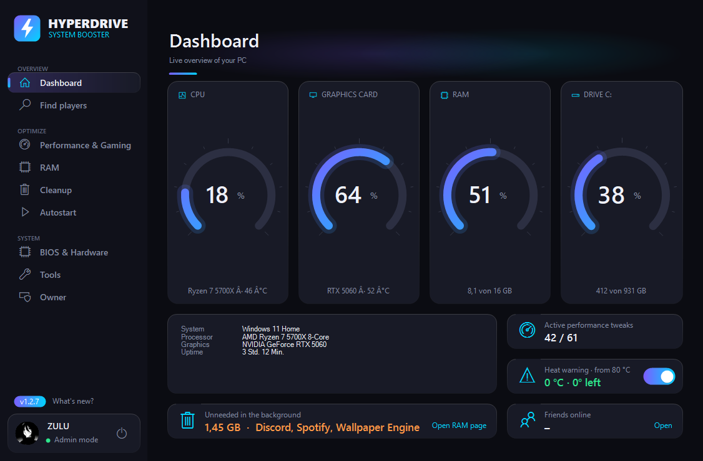

HyperDrive tunes your PC for Fortnite in one click – 50+ tweaks for FPS, ping and input delay, a Pro-Check that finds what slows you down, a RAM cleaner and more. HyperDrive optimiert deinen PC mit einem Klick für Fortnite – über 50 Tweaks für FPS, Ping und Input-Delay, ein Pro-Check, der Bremsen findet, ein RAM-Cleaner und mehr.
Download HyperDriveHyperDrive herunterladen
Every change can be undone in one click – HyperDrive creates a restore point first.Jede Änderung lässt sich mit einem Klick rückgängig machen – vorher legt HyperDrive einen Wiederherstellungspunkt an.
One click: restore point, cleanup, RAM, gaming tweaks and DNS.
Ein Klick: Wiederherstellungspunkt, Bereinigung, RAM, Gaming-Tweaks und DNS.
Checks everything that matters for stable FPS, ping and input delay – and fixes it in one click.
Prüft alles, was für konstante FPS, Ping und Input-Delay zählt – und behebt es per Klick.
Sorted in tabs, with an honest rating of what each tweak really does.
In Reitern sortiert – mit ehrlicher Einschätzung, was jeder Tweak wirklich bringt.
Competitive, Balanced or Potato – the right graphics settings in seconds.
Competitive, Balanced oder Potato – die passenden Grafik-Einstellungen in Sekunden.
Finds memory hogs, empties the standby list and cleans up automatically.
Findet Speicherfresser, leert den Standby-Speicher und räumt automatisch auf.
Find other HyperDrive players – with profile, rank, games and best scores.
Finde andere HyperDrive-Spieler – mit Profil, Rang, Spielen und Bestwerten.
Measures your real polling rate – so you know whether 1000 Hz really arrive.
Misst deine echte Abfragerate – damit du weißt, ob 1000 Hz wirklich ankommen.
New versions arrive by themselves – every update is digitally signed and verified before it installs.
Neue Versionen kommen von selbst – jedes Update ist digital signiert und wird vor der Installation geprüft.
Switch the language anytime with one click at the top right of the app.
Sprache jederzeit mit einem Klick oben rechts in der App umschalten.
Dark, clean and fast – everything at a glance.Dunkel, aufgeräumt und schnell – alles auf einen Blick.
No ads, no toolbars – just HyperDrive.Keine Werbung, keine Toolbars – nur HyperDrive.
Click “Download”. You get the file HyperDrive-Setup.exe.
Klick auf „Download“. Du bekommst die Datei HyperDrive-Setup.exe.
Open the file and click Yes when Windows asks – HyperDrive needs admin rights for the tweaks.
Datei öffnen und bei der Windows-Abfrage auf Ja klicken – HyperDrive braucht Admin-Rechte für die Tweaks.
Click Install. HyperDrive appears in the Start menu and on your desktop – done.
Auf Installieren klicken. HyperDrive landet im Startmenü und auf dem Desktop – fertig.
Installed copies update themselves automatically.Installierte Versionen aktualisieren sich automatisch.
The things people ask most.Was am häufigsten gefragt wird.
Yes. Before the first changes HyperDrive creates a Windows restore point, and every tweak can be switched back in the app. Updates are digitally signed – the app refuses any file that doesn't carry the right signature.
Ja. Vor den ersten Änderungen legt HyperDrive einen Windows-Wiederherstellungspunkt an, und jeder Tweak lässt sich in der App wieder zurückschalten. Updates sind digital signiert – die App lehnt jede Datei ohne passende Signatur ab.
HyperDrive is not a cheat. It never touches the game while it's running, doesn't inject anything and doesn't modify game files. It only changes Windows settings and Fortnite's normal settings file – the same things you could change by hand.
HyperDrive ist kein Cheat. Es greift nie ins laufende Spiel ein, injiziert nichts und verändert keine Spieldateien. Es ändert nur Windows-Einstellungen und die normale Einstellungsdatei von Fortnite – also Dinge, die du auch von Hand ändern könntest.
Windows SmartScreen warns about new programs that aren't signed with a paid certificate yet. Click “More info” and then “Run anyway”. You only have to do this once.
Windows SmartScreen warnt bei neuen Programmen, die noch nicht mit einem gekauften Zertifikat signiert sind. Klick auf „Weitere Informationen“ und dann auf „Trotzdem ausführen“. Das musst du nur einmal machen.
Most tweaks change system-wide Windows settings (power plan, services, network, GPU scheduling). Windows only allows that with admin rights.
Die meisten Tweaks ändern systemweite Windows-Einstellungen (Energiesparplan, Dienste, Netzwerk, GPU-Planung). Das erlaubt Windows nur mit Admin-Rechten.
No. HyperDrive is free – no ads, no subscription, no hidden extras.
Nein. HyperDrive ist kostenlos – ohne Werbung, ohne Abo, ohne versteckte Extras.
Yes. The Windows, network and RAM tweaks work on every PC. The NVIDIA-specific settings only show up if you have an NVIDIA graphics card.
Ja. Die Windows-, Netzwerk- und RAM-Tweaks funktionieren auf jedem PC. Die NVIDIA-Einstellungen erscheinen nur, wenn du eine NVIDIA-Grafikkarte hast.
Your account and password stay on your PC. For the online player search, HyperDrive shares your username and public profile (rank, games, best scores) so other players can find you. Update checks only ask which version is the newest.
Dein Konto und dein Passwort bleiben auf deinem PC. Für die Online-Spielersuche teilt HyperDrive deinen Benutzernamen und dein öffentliches Profil (Rang, Spiele, Bestwerte), damit andere Spieler dich finden. Update-Prüfungen fragen nur, welche Version die neueste ist.
Windows Settings → Apps → Installed apps → HyperDrive → Uninstall. Want Windows exactly like before? Switch the tweaks back in the app first, or use the restore point.
Windows-Einstellungen → Apps → Installierte Apps → HyperDrive → Deinstallieren. Soll Windows genau wie vorher sein? Schalte die Tweaks vorher in der App zurück oder nutze den Wiederherstellungspunkt.
Free. Uninstall anytime via “Apps” in Windows.Kostenlos. Jederzeit über „Apps“ in Windows deinstallierbar.
Download nowJetzt herunterladen Join the DiscordDiscord beitretenRanks as roles, squad search, giveaways, tournaments and help from the team.Ränge als Rollen, Mitspieler-Suche, Giveaways, Turniere und Hilfe vom Team.